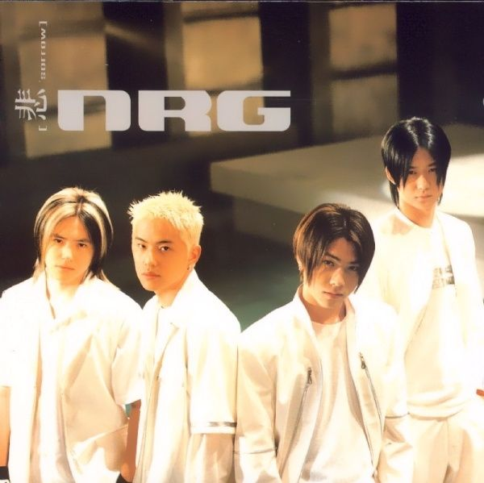

1. 개요

한류는 크게 세 단계에 걸쳐 성장했다. 김대중 대통령의 국민의 정부부터 시작된 일본 대중문화 개방을 비롯한 2000년대 초반 생성기(중국·동남아권으로 드라마 수출)→2000년대 중반 심화기(일본에서 드라마 ‘겨울연가’ 열풍)→2009년~10년 정착기(K-POP 중심으로 시작된 신한류)다. 이 가운데 정착기에 해당되는 ‘K-POP 신한류’는 드라마·영화가 중심이 됐던 과거 한류와는 그 양상이 다르다. 디지털 환경을 토대로 안정적인 성장 시스템을 구축하고 있다.
2. 1990년대(한류의 태동)
한류라는 단어가 탄생하기 이전에도 1990년대 후반에 수출되어 중국 CCTV에서
방영되어 상당한 인기를 끌었던
사랑이 뭐길래, 의가형제 등 인기 드라마와
같이 한류열풍의 싹이 조금씩 보이고 있었다.
 또한, 클론(가수)은 대만에서도 큰 인기를
끌기도 했고 NRG가 중국에서도 선풍적인 인기를
일으켰으며 대만의 배우, 인기가수 서회옥이
1990년대 한국에서 유행한 히트곡들을 많이 리메이크하기도 했다.
또한, 클론(가수)은 대만에서도 큰 인기를
끌기도 했고 NRG가 중국에서도 선풍적인 인기를
일으켰으며 대만의 배우, 인기가수 서회옥이
1990년대 한국에서 유행한 히트곡들을 많이 리메이크하기도 했다.

한류라는 단어의 기원을 보면 1997년경부터 중화권을 중심으로 한국
TV드라마와 대중가요가 인기를 얻으며 한류가 발생했는데, 당시 대만에서
'하일한류(夏日韓流, 여름에 한국 바람이
불어옴)', 중국에서 '일진한류(一陣韓流, 한국
문화 마니아들)' 등의 표현이 국지적으로 사용되기 시작했다.
이에 1999년 가을, 당시 한국 문화관광부에서 한국 대중음악을 해외에
홍보하기 위해 제작, 배포한 음반의 제목에 〈韓流-Song from Korea〉로
공식적으로 사용되었다고 한다. 아무튼, 이 때 즈음 하여 한류라는 단어가
한국 대중문화를 거론하는 고유명사로 확실하게 각인되게 된다.
3. 2000년대 초반(한국 문화 산업의 본격적인 일본 진출 및 욘사마 열풍)
2000년 1월, 한국 영화계의 르네상스를 열어젖힌
한석규, 최민식, 송강호, 김윤진 주연의 영화
쉬리가 일본에서 개봉되어 대흥행(매출
15억엔)을 기록하면서 일본의 한류가 물꼬를 트기 시작했다.
2000년 2월, H.O.T가 베이징 공연을 성공리에
마친 후 중국의 한 신문이 "한류가 중국을 강타했다"라는 헤드라인을
뽑으면서 공식화되었다. 그리고 어린 나이부터 일본 가요계로 진출하여
오리콘 차트를 제패하면서 대성공을 거둔 보아는
한국의 K-POP이 일본 진출의 길을 열기
시작하는 초석이 되기도 했다.
2000년대 초반, 일본에서도 겨울연가를 통해서
일본의 중장년층을 중심으로 배용준의 욘사마
신드롬과 함께 한국 드라마 인기가 많아지면서 일본에서도 본격적으로
한류라는 단어가 전해지게 되었다. 이처럼, 보아는 배용준과 함께 '가수는
보아, 배우는 배용준' 이런 식으로 1차 한류의 주역으로 평가받기도 한다.
4. 2000년대 후반(한국 컨텐츠의 지속적인 해외 수출과 K-POP의 영향력 증가)
2000년대 후반에 들어 일본에서도 동방신기의
인기를 시작으로 '신한류 붐의 시대'로 불리는
한국 아이돌 가수들의 열풍이 불어 중년층을 넘어서 젊은층으로까지 인기가
확산되었다.
2000년대 후반 시기에 들어서 대장금 이후부터
딱히 아시아권에서 큰 붐을 일으킨 한국 드라마가 많지 않아서 영향력이
약화되었다고 생각되기 쉬운데, 한국콘텐츠진흥원에 의하면 드라마 수출
규모는 매년 늘어나고 있었다.
다만, 대박을 기록하는 작품은 줄어들고 성장세가 둔화되고 있는 것도
사실이다. 그리고 저 멀리 아프리카에서도 드라마 대장금이 인기를 끌었다고
하고, 아랍권과 북아프리카에서는 방영되면서
미안하다 사랑한다가 세계적으로 인기를
모았고 중국, 일본, 터키같은 수많은 국가에서도 리메이크가 되기도
하였다.
이란에서도 한국드라마는 유명하다. 이란에서 유일하게 합법적으로 방송을
하는 국영방송의 지상파 채널 서너 개는 물론이고, 시청하면 불법인 외국
페르시아어 위성 채널에서도 방송을 해준다. 얼마 전에 이란 정부가 폐쇄
조치를 먹인 뉴스 코프 계열인 파르시 1이 그 예다.
그리고 뽀롱뽀롱 뽀로로는 전 세계 82개의
시장에 수출되어 2004년 프랑스 최대 지상파 채널인 TF1에서 최대 57%의
시청점유율을 기록했고 2007년 '아랍권 CNN' 으로 불리는
알자지라 방송에서까지 전파를 탔다.
2009년에는 캐릭터 상품 누적 매출액이 무려
8300억 원을 달성했다! 흔히 한류 열풍하면
한국 드라마나 K-POP, 영화 등을 떠올리지만
온라인 게임같은 미디어도 당당한
문화산업으로 뻗어나가게 되었고 거대한 한류 열풍의 범주에 들어갈 수
있다.
 실제로, 게임과 서적이 한국 미디어 산업에서 해외 매출의 절반 이상을
차지한다. 대표적인 사례는 리니지 시리즈와
아이온, 카트라이더, 미르의 전설, 크레이지 아케이드 시리즈가 조(兆) 단위도 넘게 매출을 기록하면서 성공적인 흥행을 거뒀다.
실제로, 게임과 서적이 한국 미디어 산업에서 해외 매출의 절반 이상을
차지한다. 대표적인 사례는 리니지 시리즈와
아이온, 카트라이더, 미르의 전설, 크레이지 아케이드 시리즈가 조(兆) 단위도 넘게 매출을 기록하면서 성공적인 흥행을 거뒀다.
5. 2010년대 초반(K-POP의 신한류 붐과 국산 온라인 게임의 대유행)
이 시기부터 한류를 향유하는 연령대가 10~20대로 크게 낮아지게 된다. 이는
단순한 연령대의 이동만이 아닌 한류의 확장성에 큰 영향을 끼치게 됐는데,
10~20대는 기호가 굳어지기 전의 연령대이자 다양한 기호에 도전할 수 있는
연령대이고, 사회 기반층으로 성장했을 땐 동일하게 기호가 굳어지지 않은
자식세대에게 문화에 대한 강한 영향력을 행사할 수 있는 연령대이기도
하다.
과거 한국에서 일본문화를 암암리에 수용했던 80년대와 그 영향을 받은
자식세대가 이 전 세대에 비해서 일본문화에 대한 적대감이 크게 줄었단 점은
젊은층이 장기적으로 향유할 수 있는 문화가 이 후 세대에 끼치는 영향력이
지대함을 알 수 있는 부분이며, 한류가 세계적인 영향력을 보인 기반은
강력한 소프트 파워가 큰 이유지만 그에 못지않게 이 시기에 젊은 층이
향유할 수 있는 대중문화로 발전한 원인도 컸다고 볼 수 있다.
 2010년대의 한국 대중가요계에서는
카라, 2NE1, 원더걸스, 소녀시대, 슈퍼주니어, 빅뱅
등의 아이돌을 중심으로 한 K-POP 가수들이 아시아권에서 많은 인기를 얻고
있다. 아시아를 넘어 멕시코, 페루를 중심으로 한 중남미권에서도 한국
드라마와 한국 아이돌의 인기가 정말 대단하다. 특히 브라질, 아르헨티나,
칠레는 핵폭탄급 인기를 누리는 지역이기도 하다. 그리고 한국의 예능
프로그램 포맷이 외국으로 수출되면서 고무적인 흥행을 거두고 있는
중이다.
2010년대의 한국 대중가요계에서는
카라, 2NE1, 원더걸스, 소녀시대, 슈퍼주니어, 빅뱅
등의 아이돌을 중심으로 한 K-POP 가수들이 아시아권에서 많은 인기를 얻고
있다. 아시아를 넘어 멕시코, 페루를 중심으로 한 중남미권에서도 한국
드라마와 한국 아이돌의 인기가 정말 대단하다. 특히 브라질, 아르헨티나,
칠레는 핵폭탄급 인기를 누리는 지역이기도 하다. 그리고 한국의 예능
프로그램 포맷이 외국으로 수출되면서 고무적인 흥행을 거두고 있는
중이다.
 그리고 2010년 일본 온라인 게임 시장의 점유율 탑 10이 전부 한국산 온라인
게임이었다. 특이하게도, 한국에선 반응이 별로 좋지 않았던 게임이
일본에서는 그럭저럭 잘 나가는 경우가 많았다. 1위인
프리우스가 가장 대표적인 사례다.
그리고 2010년 일본 온라인 게임 시장의 점유율 탑 10이 전부 한국산 온라인
게임이었다. 특이하게도, 한국에선 반응이 별로 좋지 않았던 게임이
일본에서는 그럭저럭 잘 나가는 경우가 많았다. 1위인
프리우스가 가장 대표적인 사례다.
날이 갈수록 상승하는 한류의 흥행 덕분에 한국의 대중문화 상품의 수출길이
열리는 등, 한국에 대한 긍정적인 이미지 향상과 친근함으로 한국산
가전제품의 수출과 한국산 상품의 추가 구매로 이어지고 있는 중이다. 분명한
것은 1차 한류 붐 이후에 2차 한류 붐이 아시아를 넘어서 세계 곳곳 중남미,
중동에 인기를 얻으면서 세계적인 문화 강국으로서의 이미지를 높이고 있다는
것이다.
6. 2010년대 중후반(신한류 붐의 시족적인 세계흥행이 이어지는 시대)

사실 전반기까지의 한류 확장세는 고만고만했지만, 후반기에 접어들자마자
이제껏 듣지도 보지도 상상하지도 못했던 어마어마한 한류 돌풍이 전 세계에
휘몰아쳤으니, 그것은 바로 싸이의
강남스타일이었다. 강남스타일은 그동안의
정립된 아이돌 위주의 K-POP의 고정관념을 다 부수고 엄청난 흥행을 하고
있으며 그 기세는 역대 K-POP 콘텐츠의 기록을 모조리 갈아치우고 있는
중이다. 아직까지는 한류의 전반적인 돌풍은 아니고 싸이가 혼자서 일으킨
돌풍이라 지켜봐야 하지만, 시간이 흘러서 2020년대인 현재에도 절대로
싸이의 성과를 저평가하지 않는다.
지금까지 아시아권 시장에서만 고무적인 흥행을 거두고 유럽권과
북미권에서는 그저 작은 팬덤을 형성한 수준에 그쳤던 한류의 한계점을
벗어나 K-POP 가수들의 노래가 전 세계적으로 열광하는 전무후무한 상황을
만들어내기 시작함에 따라 신한류 붐의 지속적인 성장과 새로운 문화부흥의
희망과 가능성을 품게 됐다는 점이다. 그리고 기존의 아이돌 주도의 K-POP이
아니라 새로운 접근과 방식에서의 K-POP 출고 방식을 다시금 재고할 수 있게
되는 지평을 확보했다는 점에서 매우 큰 의미있는 일이 아닐 수가 없다.
방탄소년단이 2010년대 중후반부터 서구권에서
반응이 오기 시작하더니 북미-유럽 등 전세계적으로 팬덤이 불어나면서
KPOP의 인지도가 급상승했다. 싸이가 1회성으로 보여줬던 화제성을 넘어
팬덤이 엄청난 수준으로 증가했으며, 각국의 주요 언론들에서도 이에 대해
보도를 쏟아냈다. 원 히트 원더였던 싸이와는 다르게 장기간에 걸쳐서
전세계적으로 인기를 끌고 있다. BTS 말고도
BLACKPINK, 엑소 등 서구권에서 좋은 성적을
내고 있는 그룹들이 늘어나고 있다.
그리고 최근 온라인 게임에 이어서 서서히 한국산 모바일 게임의 흥행도
조금씩 두각을 나타내기 시작하였다. 이를 두고 온라인 게임에 이어서 또
다른 게임 신한류의 신호탄이 될지도 모른다고 조심스럽게 예측하는 사람들이
있다.
2014년에 가장 두각을 드러낸 분야는 단연
드라마였다. 2013년 말부터 SBS에서 방영한
별에서 온 그대가 중국과 대만에서 사회
현상이라고 칭할만한 폭발적인 인기를 보인 것이다. 그 과정에서 배우
김수현, 전지현이 중국에서 찍은 CF 제품의
장백산 표기 논란으로 웹상이 시끄러워진 적도 있다. 이후 한국산 드라마가
중화권 시장에 갖는 의미가 더욱 각별해져서
괜찮아, 사랑이야가 약 20억 원에 수출되는
등의 성과를 보였다.
2016년 특기할만한 시작도 역시 드라마였다.
태양의 후예가 아시아에서 신드롬을
일으켰으며 유럽의 수많은 국가에 판권을 판매해 유럽에서도 엄청난
경제효과를 냈다. 아메리카, 아프리카에 진출하는 중으로 이미 인기를 끌고
있다.
 2019년, 봉준호 감독의 작품
기생충이 칸 영화제 황금종려상 수상은 물론,
제92회 아카데미 시상식에서 4관왕을 이룩하는 매우 커다란 성과를 거두었다.
이후 각종 영화제에서도 상을 수상하고 여러 국가의 아시아 영화, 비영어
영화 흥행 성적을 모조리 갱신했다.
2019년, 봉준호 감독의 작품
기생충이 칸 영화제 황금종려상 수상은 물론,
제92회 아카데미 시상식에서 4관왕을 이룩하는 매우 커다란 성과를 거두었다.
이후 각종 영화제에서도 상을 수상하고 여러 국가의 아시아 영화, 비영어
영화 흥행 성적을 모조리 갱신했다.
그리고 넷플릭스 작품인 킹덤이 상당한
흥행몰이를 하고 있으며, 그에 따라 한국의 전통의상에 대한 관심을 높이는데
일조했다.
7. 2020년대 ~ 현재(한류의 본격적인 세계화 진행 및 정착)

2020년에는 일본 한류의 세도 드라마를 중심으로 다시금 커질 기미가 보이고
있다. 일본 넷플릭스 전체 1,3,5위를 한국 작품이 석권한 바 있으며 특히 TVN
'사랑의 불시착'이 돌풍에 가까운 인기를 끌고
있다. 김수현이 주연을 맡은 '사이코지만 괜찮아'는 넷플릭스를 통해 190개국에서 선보여지고 있는데, 홍콩, 태국, 베트남,
말레이시아 등 아시아권 7개국에서 '가장 많이 본 콘텐츠' 1위를 차지했고,
일본에서는 2~3위를, 브라질과 페루 등 남미 전역에서도 10위권에 올랐다.
넷플릭스의 글로벌 종합 순위에선 6위까지 올랐다. 특히 '킹덤' 시즌2는 공개 직후 넷플릭스 인도의 '오늘의 Top 10'에 안착했고, 사랑의
불시착, 이태원 클라쓰 등 다른 한국 드라마도 4월부터 9월 이후까지 쭉 일본
넷플릭스 상위권을 차지하며 모테기 일본 외무상도 시청했다고 언급하는등
"일본 내 4차 한류"라는 평가까지 있을 정도다.
2020년대에 들어 한국 드라마들이 넷플릭스에 적극적으로 진출하면서 의미
있는 성적을 거두고 있다. 사랑의 불시착, 이태원 클라쓰, 사이코지만 괜찮아
등이 아시아권 넷플릭스 최상위권을 점령하고 있으며 사이코지만 괜찮아, 더
킹 : 영원의 군주 같은 경우는 비아시아권 성적도 좋아서 월드 넷플릭스
스트리밍 최상위권을 기록했다.
또한 영화계에서도 2019년에 칸 영화제의 황금종려상을 비롯한 많은
영화제에서 상을 수상한 기생충이 2020년에는 제92회 아카데미 시상식에서
6개 부분에 노미네이트 되고, 2월 9일 시상식에서 작품상, 감독상, 각본상,
국제영화상 4개 부문을 석권해 아카데미 시상식의 역사를 새로 쓰는 대업적을
이루게 된다. 거기다 아카데미 수상에 힘입어 미국 역대 비영어 영화 흥행
순위 4위, 영국 역대 비영어 영화 흥행 순위 1위를 달성했다. 또한 2020년
12월 15일 구글이 발표한 '2020 올해의 검색어' [2020년 전 세계인들이 가장
많이 검색한 영화] 1위로 선정되었다.
 그리고 조일형 감독의 작품 "#살아있다"가
넷플릭스 공개 하루만에 글로벌 무비 차트 2위에 올라선 데 이어서, 이틀
째(9월 10일 기준) 미국, 프랑스, 스페인, 스웨덴, 러시아 등 유럽 주요국,
호주를 포함해 전세계 35개국 무비차트 1위를 석권하며, 한국영화로는 최초로
넷플릭스 전세계 영화차트 1위를 차지하였다. 또한
승리호도 대박을 쳤다. 넷플릭스 공개 당일날
월드와이드 1위에 랭크되고 공개 후 28일 동안 무려 전세계 2600만이 넘는
유료 구독 가구가 시청하는 대흥행을 하였다. #살아있다와 승리호는 흥행도
흥행이지만 전통적인 극장개봉이 아니라 OTT를 통한 흥행이라는 점에서 다시
한 번 한국 영화계에 커다란 영향력과 파장을 남겼다.
그리고 조일형 감독의 작품 "#살아있다"가
넷플릭스 공개 하루만에 글로벌 무비 차트 2위에 올라선 데 이어서, 이틀
째(9월 10일 기준) 미국, 프랑스, 스페인, 스웨덴, 러시아 등 유럽 주요국,
호주를 포함해 전세계 35개국 무비차트 1위를 석권하며, 한국영화로는 최초로
넷플릭스 전세계 영화차트 1위를 차지하였다. 또한
승리호도 대박을 쳤다. 넷플릭스 공개 당일날
월드와이드 1위에 랭크되고 공개 후 28일 동안 무려 전세계 2600만이 넘는
유료 구독 가구가 시청하는 대흥행을 하였다. #살아있다와 승리호는 흥행도
흥행이지만 전통적인 극장개봉이 아니라 OTT를 통한 흥행이라는 점에서 다시
한 번 한국 영화계에 커다란 영향력과 파장을 남겼다.
한편 일본 애니메이션 산업이 양적으로 늘어난 애니메이션 시장에 비해
애니화할 일본 컨텐츠들이 부족해지면서한국의 웹툰이 반사이익을 얻고 있는
중이다. 한미일이 합작해서 여러 웹툰들을 애니메이션화하기 시작한 것이다.
2020년에
신의 탑, 갓 오브 하이스쿨, 노블레스가
차례로 애니화되었다. 이 작품들이 예상보다 서양권에서 뛰어난 흥행에
성공하며 새로운 문화 컨텐츠 활로가 생겼다.
 특히 방탄소년단은 2020년 중반에 낸 신곡
Dynamite를 통해 21세기 최초로 빌보드 차트
HOT 100에서 1위를 한 아시아 아티스트이자, 비영어권 가수 최초 & 전세계
5번째로 Hot 100, Artist 100, Billboard 200차트 모두 1위를 석권한
아티스트가 되는등 그 영향력을 과시하고 있는 중이다. 게다가 10월 중순에는
빌보드 차트 핫100 1위, 2위를 동시 석권 기록하였는데, 이 기록을 세운 것은
역대 빌보드에 입성한 가수들 중에서도
비틀즈, 비 지스, 아웃캐스트, 블랙 아이드 피스밖에 없었다고 한다.
특히 방탄소년단은 2020년 중반에 낸 신곡
Dynamite를 통해 21세기 최초로 빌보드 차트
HOT 100에서 1위를 한 아시아 아티스트이자, 비영어권 가수 최초 & 전세계
5번째로 Hot 100, Artist 100, Billboard 200차트 모두 1위를 석권한
아티스트가 되는등 그 영향력을 과시하고 있는 중이다. 게다가 10월 중순에는
빌보드 차트 핫100 1위, 2위를 동시 석권 기록하였는데, 이 기록을 세운 것은
역대 빌보드에 입성한 가수들 중에서도
비틀즈, 비 지스, 아웃캐스트, 블랙 아이드 피스밖에 없었다고 한다.
그리고 걸그룹 BLACKPINK도
셀레나 고메즈, 카디비 등 미국의 인기
팝스타와 콜라보가 성사되는 등, 아시아 바깥에서 입지를 점차 넓히고 있는
중이다. 그리고 시간이 흘러 2021년부터 BTS의 소속사
HYBE는 블랙 아이드 피스와 저스틴 비버의
소속사 SB Projects를 한국 기업의 산하
그룹으로 인수하게 된다.
2020년 8월, 한국 웹툰을 중심으로 한
픽코마가 일본에서 비게임 앱중에서 매출
1위를 차지했다. 픽코마는 2020년 8월 11일 현재 인기 작품 랭크 1위부터
10위 까지가 대부분 한국에서 만들어진 웹툰 플랫폼 앱이다.
종합하자면, 한류는 오늘날 OTT를 통한
TV 시리즈, K-POP 등 음악, 영화에 이르기까지
거의 하나의 분기점을 맞이했다. 아시아권에서만 흥행하는 것이 아니라
팝컬쳐에 한정해서 보면 그야말로 세계구급으로 종합적인 흥행을 기록하는
중이다. 괜히 미국에서도 한류의 도래를 인정한 것이 아니다. 그동안
과거에는 아시아권의 몇몇 국가들에 한정되어있었고 한 시대에 한 작품
정도만이 돌아가면서 히트치는 형태와 다르게 2020년대에 들어서는
다방면에서 동시다발적인 붐이 일어나고 있다. 생각보다 영향이 커서 이제
서구권에서도 한국 이미지가 이쪽으로 정립되는 듯하다. 컨트리볼 같은
곳에서도 점점 한국에 대해 이야기할 때 한국 문화 분야의 이야기가 늘고
있다.
과거에 잠깐 이례적인 베스트셀러로 해외 인기를 논했던 것과 달리
동남아시아, 대만, 일본 등에서는 OTT를 통해서 그냥 스테디셀러로 한국
콘텐츠가 골고루 소비되고 있는 모양새에, 가끔씩 정말 큰 히트를 치면
서양권의 인기도 더해져 세계구급 히트를 치는 방식으로 바뀌었다. 특히 일부
아시아 지역은 아예 한국 콘텐츠 앞마당이라 해도 과언이 아닐 정도로,
넷플릭스 상위 10위 이내로 다섯 개 이상씩은 고정적으로 들어가고 있다.
양상을 보자면 지리적으로 인접한 동아시아 및 동남아시아가 제일 큰 강세를
보이고 있으며, 남미, 중동, 인도가 그 뒤를 잇고, 서양권은 다른 지역들보단
인기가 덜하다. 비서양권 국가들에서 팝 컬쳐로 한정하면 한국 문화의
영향력이 가파른 상승 기류를 타고 있다고 해도 과언이 아닐 정도다. 이에
위기감을 느끼기 시작하는 일부 국가들의 주요 인사가 "한국의 콘텐츠만
좋아하지 말고, 자국의 콘텐츠도 많이 좋아하고 봐달라" 하고 호소하는 등
웃지 못할 일도 생기고 있다.